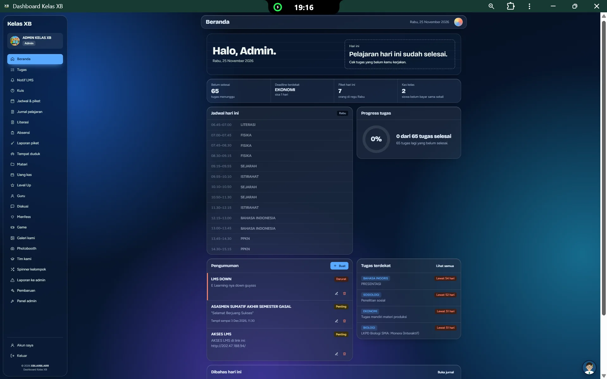

HALO, SAYA EVAN — 2026
Mengubah rasa
penasaran menjadi
karya digital.
Saya seorang pelajar yang senang mengeksplorasi teknologi, terutama pengembangan web. Saya menikmati proses menyusun ide, merancang pengalaman, menulis kode, lalu melihat semuanya bekerja menjadi sesuatu yang nyata.
LEARNING BY MAKING · BUILDING WITH CURIOSITY
GILBERT EVAN · CREATIVE EXPLORER · GILBERT EVAN ·
PERSONAL IDENTITYGEA / 001
G.
GILBERT EVAN
ARKANANTA
ARKANANTA
STUDENT · DIGITAL EXPLORER
SMA NEGERI 1 KLATEN✳ 001
DRAG THE IDTekan lalu seret ke mana saja↗
A SMALL CARD, A BIGGER JOURNEY ✳
PERSONAL ARCHIVE / 001—∞
WEB DEVELOPMENT✳CREATIVE CODING✳GOOGLE APPS SCRIPT✳GOOGLE SHEETS✳INTERACTIVE EXPERIENCES✳
WEB DEVELOPMENT✳CREATIVE CODING✳GOOGLE APPS SCRIPT✳GOOGLE SHEETS✳INTERACTIVE EXPERIENCES✳
01 / ABOUT MEA LITTLE CONTEXT BEHIND THE CODE
THE PERSON BEHIND THE SCREEN
Halo, saya
Evan.
GEA
2026
2026
Saya percaya teknologi menjadi menarik ketika kita bisa menggunakannya untuk mewujudkan ide dan membantu menyelesaikan kebutuhan nyata.
Nama saya Gilbert Evan Arkananta, pelajar di SMA Negeri 1 Klaten. Saya memiliki ketertarikan pada dunia teknologi, khususnya web development, desain antarmuka, dan proses kreatif di balik sebuah produk digital.
Ketertarikan itu mulai tumbuh ketika saya mengikuti ekstrakurikuler SECURE, khususnya di divisi Production. Dari pengalaman tersebut, saya semakin menikmati proses berkarya menggunakan teknologi dan mulai tertarik mendalami coding, terutama dalam pembuatan website.
Saya terbiasa mengeksplorasi Google Apps Script dan Google Sheets untuk mendukung kebutuhan proyek. Di luar itu, saya juga sesekali mencoba membuat game sebagai ruang eksperimen dan bersenang-senang dengan coding.
Lebih dekat dengan saya ↗02 / WHAT I EXPLOREAREAS OF CURIOSITY
Empat ruang
untuk bertumbuh.
Bidang-bidang yang paling sering saya sentuh dan ingin terus saya dalami. Bukan batas kemampuan, melainkan ruang untuk mencoba lebih jauh.
01 / WEB⌘
Web Development
Membangun website yang responsif dan interaktif, dari menyusun struktur halaman hingga menghubungkan fungsi yang dibutuhkan pengguna.
HTMLCSSJavaScript
02 / AUTOMATION↗
Sheets
Apps Script { }
Digital Productivity
Menghubungkan website dengan data dan alur kerja menggunakan Google Apps Script serta Google Sheets.
Apps ScriptSheetsWorkflow
03 / CREATIVE CODE✳
const idea =curiosity;function build() { }
✦Creative Coding
Mengeksplorasi bagaimana kode bisa menjadi medium untuk menciptakan visual, gerakan, dan pengalaman yang lebih ekspresif.
JavaScriptAnimationInteraction
04 / GAME◈
PLAY / EXPERIMENT
✣
Game & Interaction
Sesekali membuat game kecil untuk mencoba mekanik, interaksi, dan logika program dalam bentuk yang menyenangkan.
Game LogicThree.jsExperiment
03 / FROM THOUGHT TO FORMSCROLL TO BUILD ↓
THE MAKING OF AN IDEA
Everything
starts with
a question.
Rasa penasaran menjadi pemantik. Ada hal yang ingin dicoba, kebutuhan yang ingin dipahami, atau ide yang ingin diwujudkan.
01/ 04
A THOUGHT IS ONLY THE BEGINNING.
WORKSPACE / GEAMODE: IDEA
01IDEATHE SPARK
02STRUCTUREGIVE IT A SHAPE
03BUILDMAKE IT WORK
04LIVEREADY TO EXPLORE
const idea = "curiosity";function build() {design();develop();improve();}
BUILD · TEST · LEARN · REPEAT00%
ONE STEP AT A TIMECURIOUS BY NATURE ✳
04 / MY DIGITAL TOOLKITTOOLS ARE PART OF THE PROCESS
A SMALL SET OF TOOLS, MANY POSSIBILITIES
Belajar alatnya.
Bangun idenya.
Teknologi yang saya gunakan untuk merangkai tampilan, menghubungkan data, membuat interaksi, dan mencoba hal-hal baru. Pilih salah satu untuk melihat bagaimana alat tersebut masuk ke proses berkarya.
✳ Daftar ini menggambarkan teknologi yang pernah digunakan atau sedang dieksplorasi, bukan klaim tingkat kemahiran profesional.
05 / MY JOURNEYSTILL LEARNING, STILL BUILDING
Perjalanan yang
masih berjalan.
Saya belum menganggap proses belajar ini selesai. Setiap pengalaman memberi alasan baru untuk memahami sesuatu lebih dalam dan mencoba hal yang belum pernah dibuat.
01
Menemukan ketertarikan.
Melalui ekstrakurikuler SECURE di divisi Production, saya mulai menumbuhkan ketertarikan pada proses produksi digital. Dari lingkungan inilah rasa penasaran terhadap coding dan pembuatan website semakin berkembang.
02
Membangun sesuatu yang berguna.
Kebutuhan teman-teman kelas menjadi dorongan untuk membuat XBLARBLARR, sebuah website kelas yang membantu mengumpulkan berbagai informasi dan fitur dalam satu tempat.
03
Mencoba kemungkinan lain.
Rasa ingin tahu kemudian membawa saya mencoba hal di luar website informatif, termasuk eksperimen game simulasi 3D yang menggabungkan visual, logika, dan interaksi.
04
Terus belajar dan menyempurnakan.
Saat ini saya ingin memperkuat fondasi coding, meningkatkan kualitas pengalaman pengguna, dan terus mengembangkan ide menjadi karya yang semakin matang.
06 / SELECTED WORKSA FEW THINGS I HAVE BUILT
Ide yang berubah
menjadi karya.
Dua proyek dengan tujuan yang berbeda: satu dibuat untuk kebutuhan nyata di lingkungan kelas, satu lagi lahir dari eksperimen dan rasa penasaran.
PROJECT / 001WEB APPLICATION · CLASS PLATFORM LIVE WEBSITE
A DIGITAL SPACE FOR THE CLASS
XBLARBLARR
Website kelas yang saya kembangkan untuk membantu seluruh siswa mengakses berbagai kebutuhan kelas melalui satu tempat. Bukan hanya halaman informasi, XBLARBLARR dirancang sebagai pusat aktivitas digital kelas.
01Akademik: tugas, kuis, materi, jurnal, dan literasi
02Operasional: jadwal, piket, absensi, dan tempat duduk
03Komunitas: diskusi, menfess, uang kas, dan tim kelas
04Ruang interaktif: game, galeri, photobooth, dan spinner kelompok
xblarblarr.web.id↗

CLASS
HUB / 01
HUB / 01
CLASS ECOSYSTEM / MODULESRAGAM MENU DALAM SATU RUANG KELAS DIGITAL
TugasNotifikasi LMSKuisJadwal & PiketJurnal PelajaranLiterasiAbsensiLaporan PiketTempat DudukMateriUang KasLevel UpGuruDiskusiMenfessGameGaleriPhotoboothTim KamiSpinner KelompokLaporan AdminPembaruanPanel Admin
BUILT TO MAKE CLASS ACTIVITIES MORE ORGANIZEDKLATEN / INDONESIA
PROJECT / 002CREATIVE CODING · 3D GAME EXPERIMENT PLAYABLE EXPERIMENT
NIGHT MARKET / 3D
A SMALL EXPERIMENT
WITH A BIG APPETITE.
WITH A BIG APPETITE.
A LITTLE GAME AFTER HOURS
SATE MASTER
3D.
Eksperimen game simulasi penjual sate yang dibuat untuk mengeksplorasi bagaimana lingkungan 3D, mekanik permainan, dan interaksi pengguna dapat bekerja bersama di browser.
013D EnvironmentSuasana gerobak di malam hari
02Game MechanicsMemasak, membalik, dan menyajikan sate
03ManagementStok, saldo, pelanggan, dan upgrade
04InteractionKontrol dan audio berbasis browser
MADE TO EXPLORE · NOT TO BE PERFECTCREATIVE PLAYGROUND / 02
07 / HOW I APPROACH A PROJECTSMALL PRINCIPLES, EVERY BUILD
Fungsi yang jelas.
Pengalaman yang berkesan.
Bagi saya, sebuah website yang baik tidak hanya terlihat menarik. Ia juga perlu punya tujuan, mudah dipahami, dan nyaman digunakan.
Mulai dari kebutuhan.
Memahami tujuan dan siapa yang akan menggunakan karya tersebut sebelum mulai membangunnya.
Perhatikan pengalaman.
Mengusahakan tampilan yang jelas, alur yang masuk akal, serta interaksi yang membantu pengguna.
Berani memperbaiki.
Menganggap revisi sebagai bagian dari proses. Hal yang belum tepat adalah kesempatan untuk belajar.
08 / GEA MINI LABA LITTLE SPACE TO PLAY
Bagaimana jika
kita mencoba?
Ruang eksperimen kecil di dalam portofolio ini. Racik beberapa pilihan dan temukan satu gagasan digital untuk dijadikan pemantik.
IDEA GENERATOR / 001LIVE PLAYGROUND
Hasil generator ini hanyalah pemantik ide, bukan daftar proyek yang sudah dibuat.
OUTPUT / 001GENERATED THOUGHT
✳
YOUR NEXT LITTLE EXPERIMENT
Ruang belajar
interaktif.
Bangun sebuah website interaktif dengan nuansa editorial dan minimalis untuk membantu siswa menyelesaikan aktivitas belajar melalui navigasi yang intuitif.
G.09 / QUICK QUESTIONSA FEW THINGS WORTH KNOWING
Masih ada
yang ingin
diketahui?
Beberapa jawaban singkat tentang saya, proses belajar, dan proyek yang ada di portofolio ini.
Punya pertanyaan lain? ↗01Siapa Gilbert Evan Arkananta?+
Saya pelajar di SMA Negeri 1 Klaten yang tertarik pada web development, creative coding, dan pemanfaatan teknologi untuk membangun karya digital.
02Apa yang membuat saya tertarik pada coding?+
Ketertarikan saya tumbuh melalui kegiatan ekstrakurikuler SECURE di divisi Production. Dari sana saya mulai menikmati proses membuat sesuatu dengan teknologi, terutama website.
03Apa proyek yang bisa dijelajahi di sini?+
Ada XBLARBLARR, website kelas yang saya kembangkan untuk membantu aktivitas siswa, serta Sate Master 3D, eksperimen game simulasi berbasis browser.
04Teknologi apa yang saya gunakan?+
Beberapa teknologi yang pernah saya gunakan atau eksplorasi antara lain HTML, CSS, JavaScript, Google Apps Script, Google Sheets, dan Three.js.
05Apakah saya masih belajar?+
Tentu. Portofolio ini adalah catatan perjalanan yang terus berkembang. Saya masih memperkuat fondasi, mencoba pendekatan baru, dan menyempurnakan karya yang sudah dibuat.
10 / LET'S CONNECTTHE NEXT CHAPTER STARTS HERE
THANK YOU FOR MAKING IT THIS FAR.
Punya ide?
Mari wujudkan.
Saya terbuka untuk bertukar ide, berbagi proses belajar, dan mengenal hal-hal baru di dunia digital. Sampai bertemu di perjalanan berikutnya.
FIND ME ON INSTAGRAM@gilbertevanarkananta↗